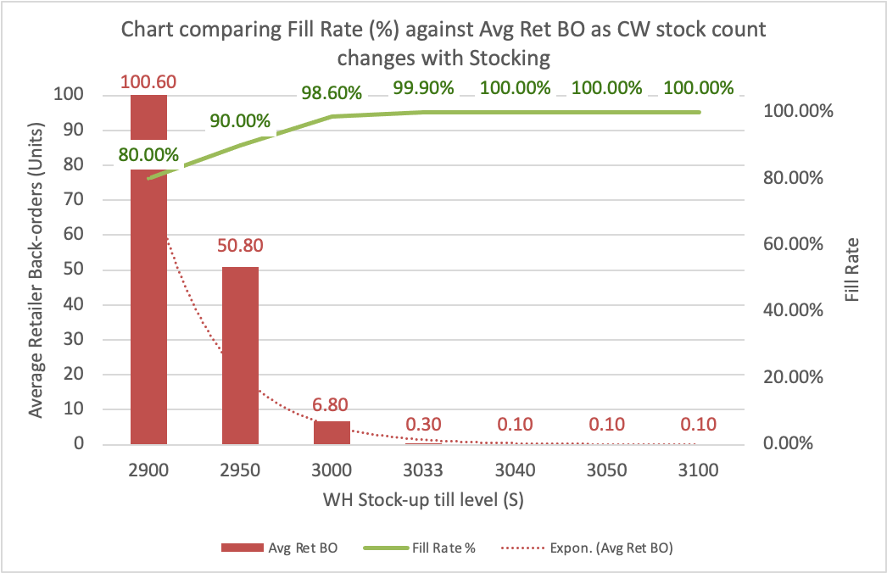
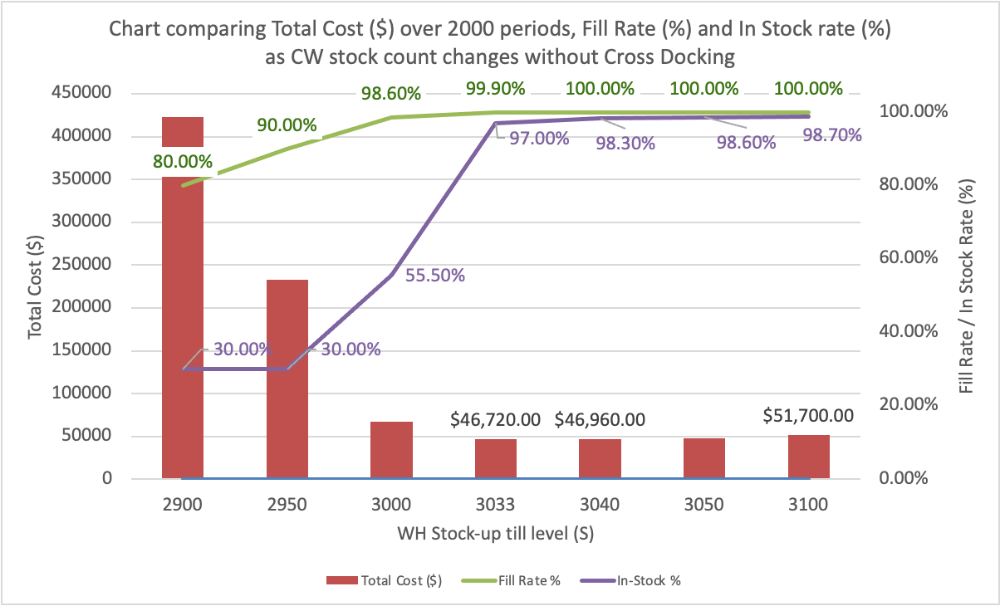
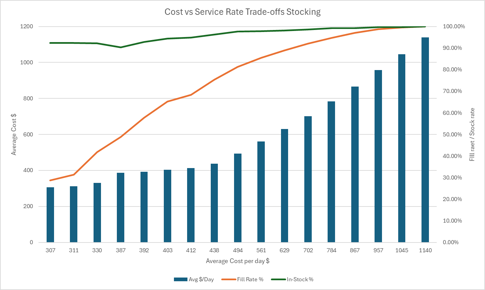
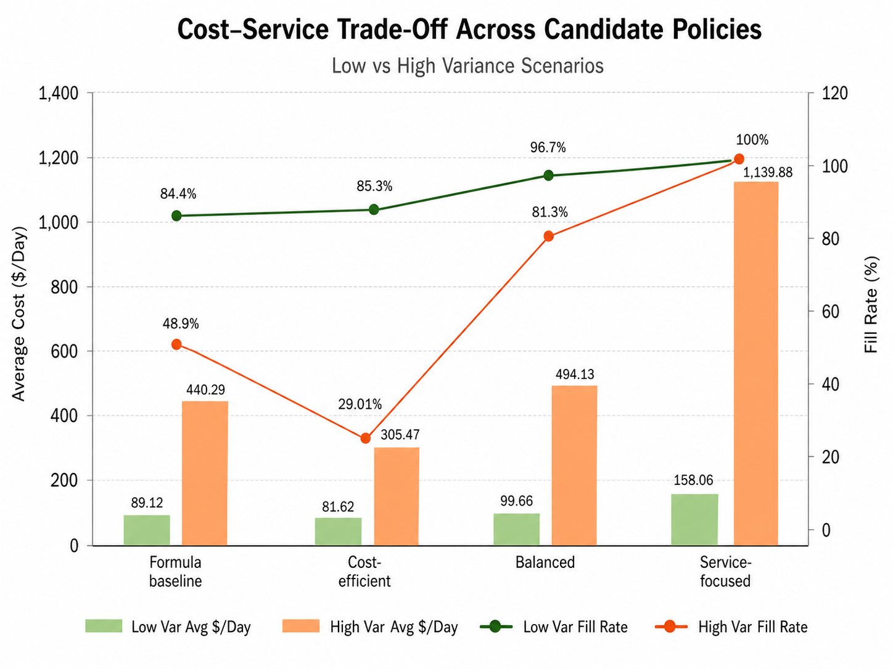
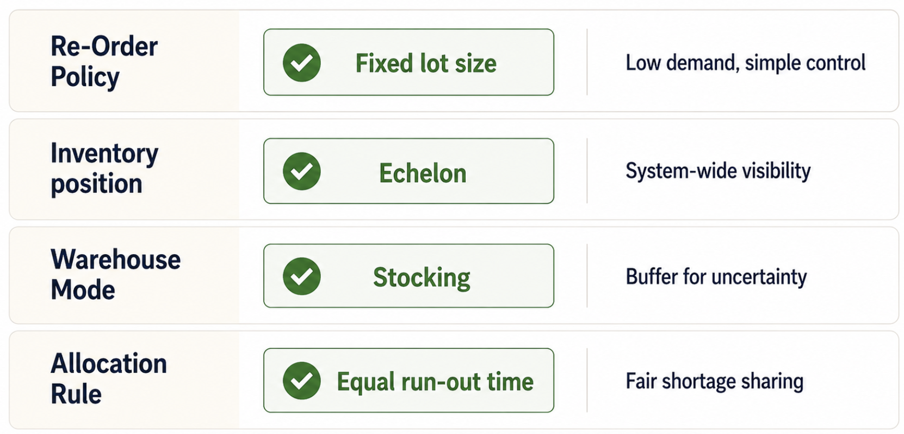
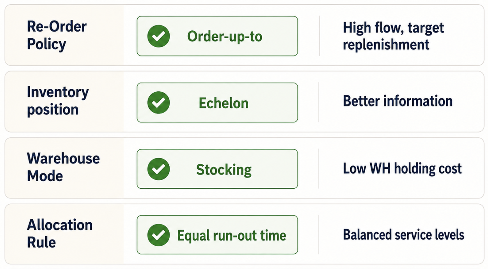
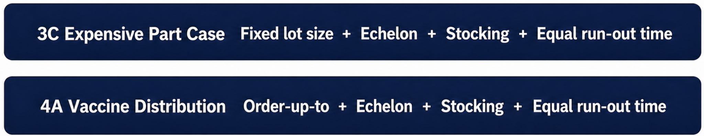

Two supply chains, two completely different definitions of "optimal"
A course project in Principles of Supply Chain Management, where my team designed inventory policies for a low-volume, expensive spare-part network (Scenario 3C) and a high-volume, service-critical vaccine distribution system (Scenario 4A), then had to justify a different answer for each.
The problem
Both scenarios used the same basic structure, a central warehouse supplying retailers, but that's where the similarity ended.
Scenario 3C was an expensive spare part: demand of about 0.1 units/day per retailer, with a coefficient of variation as high as 14. Long lead times (19 days at the warehouse) and expensive backorders. The risk here wasn't overstocking; it was getting caught empty-handed during a rare demand spike.
Scenario 4A was vaccine distribution: high, steady demand, short lead times, low holding costs, though a stockout wasn't just a financial inconvenience. We treated fill rate and availability as the priority, not pure cost minimization.
Across four policy dimensions (fixed lot size vs. order-up-to, local vs. echelon inventory visibility, stocking vs. cross-docking, and FCFS vs. equal-run-out allocation), there were 16 possible policy combinations per scenario; this was a real decision problem, not a single formula.
How we approached it
Built formula-based baselines first
For the spare part, EOQ calculations gave us a starting order quantity of 1 unit at the retailer and 5 at the warehouse. Reorder points came from a 90% service-level target, giving us high- and low-variance baselines to start experimenting from, rather than final answers.
Picked structural policies based on the economics of each system
For the spare part, we favored fixed lot size and warehouse stocking: with demand that unpredictable, a buffer mattered more than trimming inventory. For the vaccine system, we leaned toward order-up-to, since there was no fixed ordering cost penalizing frequent replenishment.
Let simulation challenge our assumptions, and it did
Cross-docking looked attractive for the vaccine scenario on paper: stable demand, fast replenishment. But under high variance, cross-docking actually cost more (~$35/day vs. ~$30/day for regular stocking) while keeping service level about the same. We dropped it from the final recommendation. Theory pointed one way; the simulation told us something different, and we followed the simulation.
Caught a badly wrong starting assumption
One early configuration set the vaccine retailer's reorder point at 10 units, while actual daily demand was around 100 units. Fill rate collapsed to about 13%. Instead of nudging that number up gradually, we rebuilt the baseline from the actual demand and variance parameters, which brought fill rate close to 100%. Simulation isn't just for confirming a policy works; it's also good for catching when your starting assumption is fundamentally off-scale.

Tuned incrementally toward the point of diminishing returns
For the spare part under low variance, the biggest drop in backorder cost happened between warehouse reorder point 17 and 23. Past 23, holding cost kept climbing while service barely improved, so that's where we stopped. Chasing perfect service (near-100% fill rate) would have cost nearly 3x more per day than the balanced policy for a small service gain.


Comparing all four candidate policies
Once we had a shortlist, we ran a head-to-head comparison of formula baseline, cost-efficient, balanced, and service-maximizing policies across both variance scenarios. The balanced policy is the one we ended up recommending: it captures nearly all of the achievable fill rate without paying the steep cost premium the service-maximizing policy demands.

Final recommendations
| Scenario 3C (Spare Part) | Scenario 4A (Vaccine) | |
|---|---|---|
| Replenishment | Fixed lot size | Order-up-to |
| Inventory visibility | Echelon | Echelon |
| Warehouse strategy | Stocking | Stocking (no cross-dock) |
| Allocation | Equal run-out | Equal run-out |



Results
What I learned
The right inventory policy depends entirely on what you're optimizing for, and that's not always cost. Formulas are great for a starting point, but a multi-echelon system behaves nonlinearly enough that you need simulation to actually see where the trade-offs bend. And metrics can mislead you if you don't understand how they're generated; backorder delay looked informative until we realized it was hiding the real story.
What I'd do differently
- Automate the search instead of tuning parameters by hand: grid search or a simulation-optimization approach would cover far more of the policy space
- Run multiple replications per configuration, since a single stochastic run can look better or worse than it really is
- Build an actual Pareto frontier instead of eyeballing where diminishing returns kick in
- Stress-test the chosen policies against changes in demand, lead time, or supplier disruption to see how much the environment can shift before the recommendation stops holding